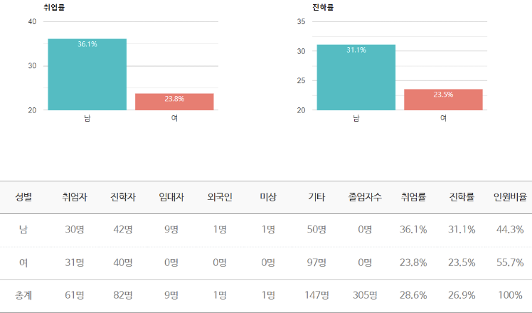
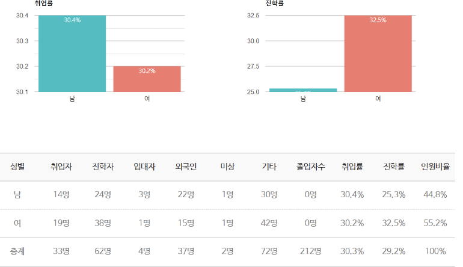

법학부
“공법을 물같이 정의를 하수같이"
전공 : 한국법 전공, US & International Law 전공
한국법 전공
한동대학교 법학부의 한국법 전공은 국내 법률 체계를 깊이 있게 학습하며 법률적 소양을 기르는 데 중점을 둡니다. 학생들은 한국법에 대한 전문 지식을 습득하여 법률가, 공무원, 기업 법무 전문가 등 다양한 분야에서 활동할 준비를 합니다. 한국법 전공은 학생들의 적성과 목표에 맞춰 학습 방향을 설정할 수 있도록 유연성을 제공합니다. 이를 통해 실질적 법률 역량과 윤리적 사고를 겸비한 전문가를 양성합니다. 글로벌 관점을 함께 고려하여 국내외에서 법률적 기여를 할 수 있는 인재로 성장합니다.
헌법1
민법총칙
형법1
한동아시아인권법학회
사람의 가치를 발견하고 그 권리를 존중하는 방법과 의미에 대해서 고민하는 학회 입니다. 인권의 실상과 문제에 대한 실체적이고 현실적인 대안과 다양한 방안들을 놓고 열띤 토론을 벌입니다.
통일법학회
통일법학회는 법률적으로 통일 한반도를 준비하기 위해 필요한 연구와 토론을 하는 학회입니다. 북한지역 인권문제, 남북교류협력, 탈북민 정책, 해외 통일 관련 사례 등 다양한 주제를 바탕으로 각 구성원이 통일 정책에 대한 논의와 관련 법률을 검토하는 시간을 가질 것입니다.
경제법학회
경제법학회에서는 경제 문제로 고통을 겪는 이웃에 대한 관심을 가진 이들이 모여 있습니다. 경제법을 통해 경제 개념과 관련된 사안을 탐구하면 서 문제 해결 방법을 알아봅니다.
다면: 한동 법여성학회
성매매연구학회가 모태가 되는 법여성학회 다면은 기독교적 가치를 바탕으로 법, 젠더, 노동, 구조적 억압 등 여성이 마주하는 다양한 면을 고민하며 공부합니다.
학부장 교수님과의 여행
법학부의 날
특별한 법학부 MT
진로지도캠프
법률기관
법무법인 태평양, 법무법인 율촌, 법무법인 소명, 지방법원 검사 등
법률 관련 기관
지방법원, 분쟁조정위원회, 특허법원, 특허사무소, 법무사 사무소, 국회의원 보좌관 등
금융권
신한은행, 농협중앙회, 미래에셋생명보험, 한국증권거래소 등
기업
현대자동차, 대한항공, LG이노텍, 인천공항공사, 한국유나이티드제약, KT, CJ제일제당, 경동도시가스, 롯데쇼핑 등
법학전문대학원
한동국제법률대학원, 연세대학교 법학전문대학원, 경북대학교 법학전문대학원, 성균관대 학교 법학전문대학원, 인하대학교 법학전문대학원, 한양대학교 법학전문대학원, 충남대학 교 법학전문대학원, 부산대학교 법학전문대학원, 강원대학교 법학전문대학원, 동아대학교 법학전문대학원 등
* 최근 3년(2018-2020년)동안 37명 국내 로스쿨 진학
일반대학원
서울대학교 대학원, 한양대학교 대 학원, 성균관대학교 대학원, 경북대 학교 대학원, 경희대학교 대학원, 서강대학교 대학원, 고려대학교 대학원 등
US & International Law 전공
UIL(US and International Law) 전공은 한국 최고의 미국법 및 국제법 학사 과정으로 평가받으며, 모든 수업이 영어로 진행됩니다. 미국법 분야에서는 헌법, 계약법, 형법, 소송 절차 등 기본법과 법철학 등을 학습하여 법률적 사고력을 기릅니다. 국제법 분야에서는 국제적 이슈를 이해하고 법적 해결 방안을 모색할 수 있는 폭넓은 지식을 제공합니다. 글로벌 법률 전문가로 성장할 수 있도록 이론과 실무를 균형 있게 배우는 것이 특징입니다. 이를 통해 학생들은 국내외에서 활약할 수 있는 국제적 역량과 법률적 소양을 갖추게 됩니다.
Public International Law
Law and Advocacy(LnA) 모의재판학회
Law and Advocacy (LnA) 는 국제법을 공부하고, 각종 모의재판 대회에 출전하는 학회입 니다. 저희는 매주 있는 정기 모임에서 법의 이론적인 부분을 배우고, 이를 적용해보는 시 간을 갖습니다. 이 경험을 토대로 다양한 국제 모의재판 대회에 참가하여 각자가 좀 더 관 심 있는 국제법 분야를 집중적으로 공부하고 있습니다.
LWB
국제 사회에서 발생하는 여러 사건과 이슈에 대해서 같이 공부하고, 토론하며 법률적 관점 에서 한국 뿐만 아니라 법을 공부하는 다른 국가의 학생들과의 학술 교류를 통한 네트워크 형성 및 미래 법률가 육성에 목적이 있습니다
HIPS
HIPS(Handong Intellectual Property Society)는 교내 유일의 지식재산 관련 학회로써, 교내 지식재산에 대한 관심 및 역량 증가를 목표로 합니다. 특별히, 구성원들의 이론적 지식 뿐만 아닌 실무적 역량을 기르는 것을 목표로 하여, 상반기엔 특허청이 주관하는 캠퍼스 특허 유니버시아드를 참가하고 미국 특허 업무 경험과 상표 출원 활동을 진행하고 있습니다.
법학부의 날(UIL Sizzle Day)
모의재판, 토론대회, 모의유엔대회 등 각종 대회 석권!
UN 본부사무국 법무실, 법무법인 율촌, 대학교 법학교수, 삼성전자 법무팀, 코리아중앙데일 리(Korea JoongAng Daily), 미래에셋, 대한항공, 공기업, 특허사무소, UNESCO, 주 시카 고 총영사관, 인천공항공사, 한동공익법센터, 핸드스튜디오 등
해외 대학원
Georgetown Law School(조지타운대학교 법률대학원), Handong International Law School(한동국제법률대학원), George Washington Law School(조지워싱턴대학교 법률대학원), London School of Economics(런던정치경제대학교 대학원), Harvard Kennedy School of Government(하버드대학교 케네디스쿨) 등
국내 법학전문대학원
연세대 법학전문대학원, 성균관대 법학전문대학원, 충남대 법학전문대학원, 경희대 법학전 문대학원, 한양대 법학전문대학원, 전북대 법학전문대학원, 부산대 법학전문대학원, 경북대 법학전문대학원 등
교수진
졸업생 진로 현황 및 취업룰
한국법
UIL
